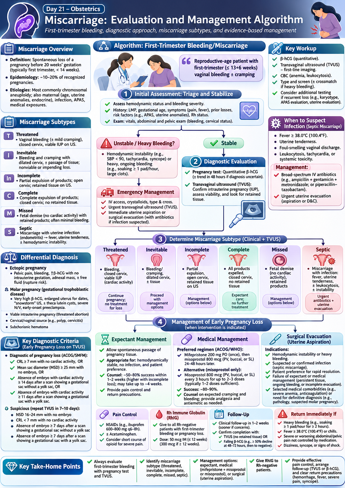
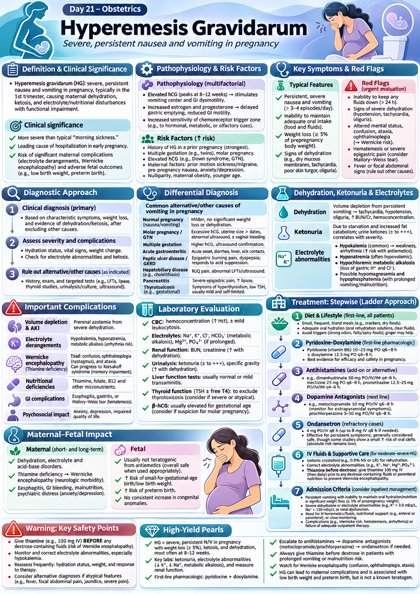
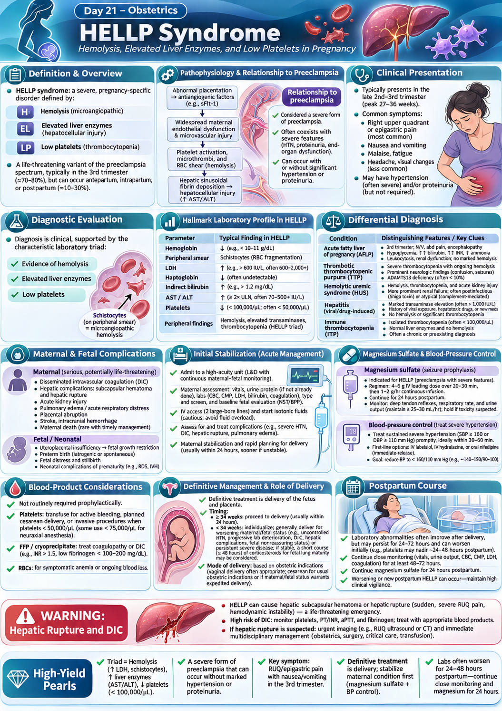
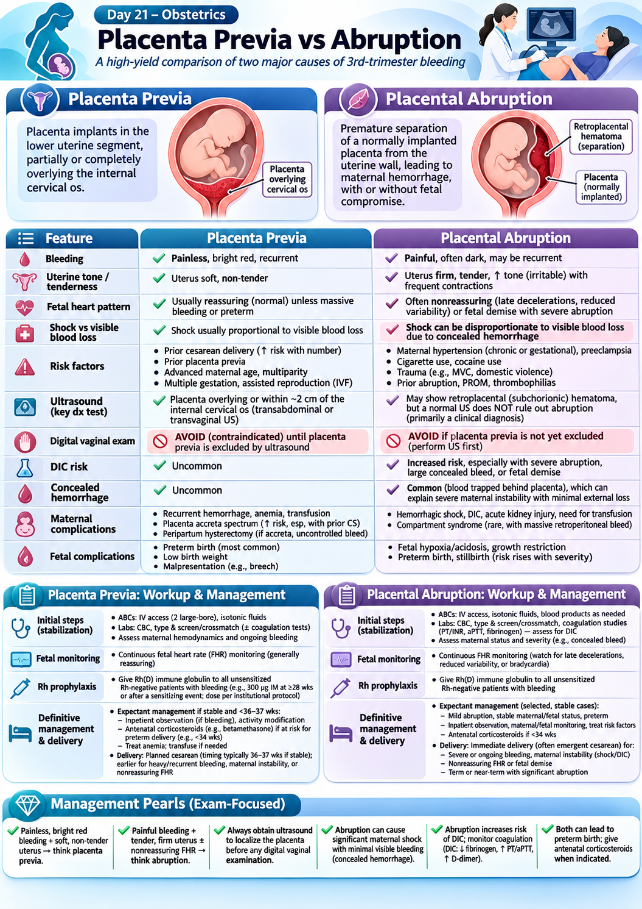
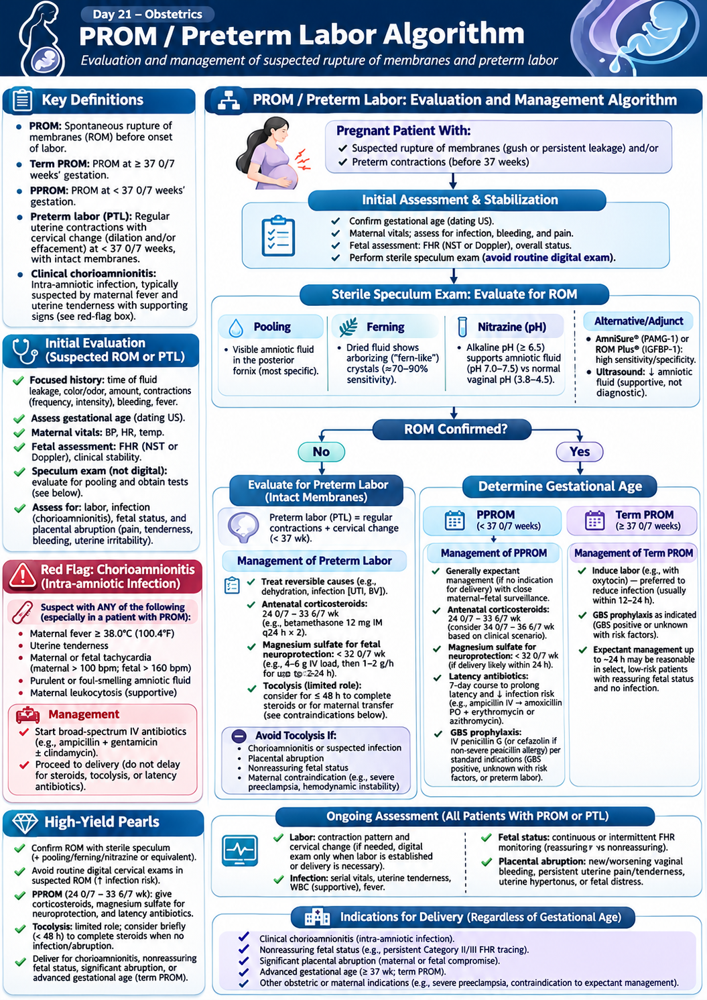
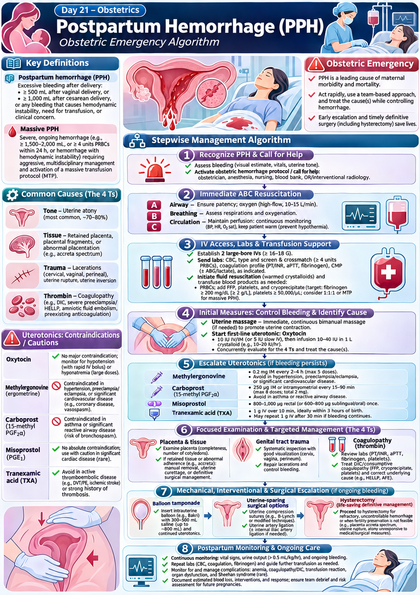

Day 21 — Obstetrics
High-yield obstetrics review for the DOH physician exam: antenatal care, first-trimester bleeding, hyperemesis, gestational diabetes, hypertensive disorders of pregnancy, placenta disorders, PROM/preterm labor, and postpartum hemorrhage. The content is organized to keep the same interactive structure used in the upgraded recent study days.
Normal pregnancy and antenatal basics
Screening, dating, physiologic changes, and routine risk reduction in uncomplicated pregnancy.
Core exam concepts
- Dating: use first-trimester ultrasound for most accurate estimated due date; Naegele rule remains a quick bedside estimate.
- Physiology: plasma volume rises more than RBC mass causing physiologic anemia; cardiac output and GFR increase; mild respiratory alkalosis is normal.
- Routine care: folic acid, vaccination review, blood group/Rh, antibody screen, CBC, infectious screening, and anatomy scan are high-yield.
Antenatal screening framework
- Booking visit: blood pressure, BMI, urine dipstick, obstetric history, medication/teratogen review, intimate-partner violence screening when appropriate.
- Labs: CBC, ABO/Rh, antibody screen, rubella/varicella immunity as locally applicable, hepatitis B, HIV, syphilis, urine culture.
- Screening during pregnancy: gestational diabetes at 24–28 weeks (earlier if high risk), GBS screening at 35–37 weeks, targeted aneuploidy screening as offered.
Board pearls and counseling points
- Red-flag symptoms: vaginal bleeding, severe abdominal pain, headache/visual symptoms, reduced fetal movement, leakage of fluid, fever.
- Recommended vaccines during pregnancy: influenza, Tdap, and COVID-19 per current policy.
- Avoid ACE inhibitors, isotretinoin, valproate when possible, and review all OTC/herbal products.
🖼️ Study visual — Normal Pregnancy & Antenatal Care
Clinical overview of dating, routine screening, physiologic changes, and counseling essentials.
Rapid review
Exam-focused recall points for normal pregnancy and antenatal basics.
Key references
Use these references as anchors for your review; prioritize local policy, institutional protocols, and official licensing-board content whenever available.
My additions / weak points
Ectopic pregnancy
A must-not-miss first-trimester emergency: diagnose early, risk-stratify, and choose methotrexate vs surgery appropriately.
High-yield recognition
- Classic triad: amenorrhea, lower abdominal pain, vaginal bleeding — but not all are present.
- Think rupture if hemodynamic instability, peritoneal signs, severe pain, syncope, or free fluid.
- Risk factors: prior ectopic, PID, tubal surgery, ART, IUD in situ with positive pregnancy, smoking.
Diagnostic approach
- Quantitative β-hCG plus transvaginal ultrasound are first-line.
- If no intrauterine pregnancy and β-hCG above the discriminatory zone, ectopic becomes highly likely.
- Pregnancy of unknown location requires serial β-hCG and repeat ultrasound.
Management pearls
- Methotrexate for stable, unruptured ectopic with reliable follow-up and no contraindication.
- Surgery for rupture, instability, contraindication to MTX, high β-hCG burden, fetal cardiac activity, or failed medical therapy.
- Give Rh immune globulin to unsensitized Rh-negative patients with bleeding/ectopic pregnancy.
🖼️ Study visual — Ectopic Pregnancy Algorithm
Diagnostic and management pathway including ultrasound interpretation and treatment selection.
Rapid review
Exam-focused recall points for ectopic pregnancy.
Key references
Use these references as anchors for your review; prioritize local policy, institutional protocols, and official licensing-board content whenever available.
My additions / weak points
Miscarriage
Understand threatened, inevitable, incomplete, complete, and missed miscarriage, plus when uterine evacuation is needed.
Classification and diagnosis
- Threatened: bleeding with closed cervix and viable pregnancy.
- Inevitable/incomplete: open cervix ± retained products and ongoing bleeding/cramping.
- Missed miscarriage: nonviable pregnancy retained in uterus with minimal symptoms.
Evaluation
- Assess hemodynamic stability, pain severity, amount of bleeding, and Rh status.
- Use TVUS to confirm viability/location and look for retained products.
- Labs: CBC if significant bleeding, β-hCG when location/viability uncertain.
Management choices
- Expectant is appropriate for many stable early losses.
- Medical management commonly uses misoprostol ± mifepristone if available.
- Surgical evacuation is preferred for heavy bleeding, infection, hemodynamic instability, or patient choice.
- Give Rh immune globulin when indicated in Rh-negative unsensitized patients.
🖼️ Study visual — First-Trimester Bleeding / Miscarriage Algorithm
Approach to miscarriage phenotypes and management pathways.
Rapid review
Exam-focused recall points for miscarriage.
Key references
Use these references as anchors for your review; prioritize local policy, institutional protocols, and official licensing-board content whenever available.
My additions / weak points
Hyperemesis gravidarum
More than “morning sickness”: recognize dehydration, ketosis, electrolyte derangement, and Wernicke risk.
Definition and key findings
- Severe persistent nausea/vomiting causing dehydration, ketonuria, weight loss (often ≥5%), and functional impairment.
- Usually peaks in the first trimester but may persist longer.
- Red flags: inability to tolerate fluids, syncope, hematemesis, neurologic symptoms, abdominal pain/fever.
Workup
- Assess volume status, ketonuria, electrolytes, renal function, and weight trend.
- Consider thyroid studies, LFTs, and ultrasound if atypical, severe, or concern for multiple gestation/molar pregnancy.
- Remember thiamine before dextrose in prolonged vomiting to prevent Wernicke encephalopathy.
Treatment ladder
- Dietary modification, oral hydration, pyridoxine-doxylamine first line.
- Escalate to antihistamines, dopamine antagonists, or ondansetron if refractory.
- Moderate/severe cases: IV fluids, electrolyte correction, antiemetics, and admission if unable to maintain oral intake.
🖼️ Study visual — Hyperemesis Gravidarum Guide
Diagnostic approach, complications, and stepwise therapy.
Rapid review
Exam-focused recall points for hyperemesis gravidarum.
Key references
Use these references as anchors for your review; prioritize local policy, institutional protocols, and official licensing-board content whenever available.
My additions / weak points
Gestational diabetes
Screen correctly, diagnose with local criteria, and know diet, insulin, fetal surveillance, and postpartum follow-up.
Screening and diagnosis
- Screen most pregnant patients at 24–28 weeks; test earlier in high-risk women.
- One-step 75 g OGTT or two-step 50 g challenge → 100 g OGTT depending on local protocol.
- Differentiate pregestational diabetes from new-onset GDM.
Management essentials
- Medical nutrition therapy, exercise, and home glucose monitoring are foundational.
- Typical glycemic targets: fasting <95 mg/dL, 1-h postprandial <140, or 2-h <120 mg/dL.
- Use insulin when targets are not met; metformin may be used in some settings but insulin remains the standard when tighter control is required.
Obstetric implications
- Complications: macrosomia, shoulder dystocia, neonatal hypoglycemia, polyhydramnios, and preeclampsia.
- Postpartum: stop pregnancy-specific therapy, reassess glucose at 4–12 weeks, and counsel regarding future type 2 diabetes risk.
🖼️ Study visual — Gestational Diabetes Infographic
Diagnosis, glycemic targets, and maternal-fetal implications.
Rapid review
Exam-focused recall points for gestational diabetes.
Key references
Use these references as anchors for your review; prioritize local policy, institutional protocols, and official licensing-board content whenever available.
My additions / weak points
Gestational hypertension and preeclampsia/eclampsia
Define disease precisely, identify severe features, stabilize mother, prevent seizures, and time delivery appropriately.
Definitions and severe features
- Gestational HTN: new BP ≥140/90 after 20 weeks without proteinuria/severe features.
- Preeclampsia: gestational HTN plus proteinuria or end-organ dysfunction.
- Severe features: BP ≥160/110, thrombocytopenia, transaminitis/RUQ pain, renal dysfunction, pulmonary edema, neurologic/visual symptoms.
Evaluation
- Confirm blood pressure, assess symptoms, fetal well-being, urine protein, CBC, creatinine, AST/ALT.
- Eclampsia = seizure in the setting of preeclampsia after exclusion of other causes.
Management pearls
- Magnesium sulfate prevents/treats eclamptic seizures.
- Treat sustained severe hypertension promptly with labetalol, hydralazine, or nifedipine.
- Delivery is the definitive treatment; timing depends on gestation and disease severity.
🖼️ Study visual — Hypertensive Disorders of Pregnancy Algorithm
Recognition, blood pressure treatment, magnesium, and delivery planning.
Rapid review
Exam-focused recall points for gestational hypertension and preeclampsia/eclampsia.
Key references
Use these references as anchors for your review; prioritize local policy, institutional protocols, and official licensing-board content whenever available.
My additions / weak points
HELLP syndrome
Recognize hemolysis, elevated liver enzymes, and low platelets early, and differentiate from AFLP/TTP/HUS.
Clinical picture
- Usually presents in late 2nd or 3rd trimester with RUQ/epigastric pain, nausea/vomiting, malaise, hypertension ± proteinuria.
- May occur antepartum or postpartum and may exist without dramatic BP elevation.
Diagnostic profile
- Triad: microangiopathic hemolysis, elevated AST/ALT, platelets <100,000/µL.
- Check CBC, peripheral smear, LDH, bilirubin, creatinine, coagulation profile, fibrinogen, and fetal status.
- Differentiate from AFLP, TTP, HUS, hepatitis, and ITP.
Management
- Admit to high-acuity care, stabilize, control severe BP, give magnesium sulfate, and prepare for delivery.
- Complications include DIC, hepatic hematoma/rupture, AKI, placental abruption, and pulmonary edema.
🖼️ Study visual — HELLP Syndrome Infographic
Pathophysiology, differential diagnosis, maternal/fetal complications, and acute management.
Rapid review
Exam-focused recall points for hellp syndrome.
Key references
Use these references as anchors for your review; prioritize local policy, institutional protocols, and official licensing-board content whenever available.
My additions / weak points
Placenta previa vs abruption
Differentiate painless previa from painful abruption and know the first steps in maternal stabilization.
Classic differences
- Placenta previa: painless bright-red bleeding after mid-pregnancy; malpresentation common.
- Abruption: painful bleeding, uterine tenderness/rigidity, fetal distress, contractions, concealed blood possible.
- Never perform digital vaginal exam until previa is excluded by ultrasound.
Evaluation and stabilization
- ABC assessment, fetal monitoring, IV access, CBC/coagulation, blood type and crossmatch.
- Ultrasound helps identify previa but does not exclude abruption (clinical diagnosis).
- Consider Rh immune globulin in Rh-negative unsensitized patients with bleeding.
Management pearls
- Previa management depends on bleeding severity, gestation, and maternal/fetal status; cesarean often required if persistent major previa.
- Abruption with maternal instability or nonreassuring fetal status often requires urgent delivery.
🖼️ Study visual — Placenta Previa vs Abruption
Clinical differentiation and first-line stabilization strategy.
Rapid review
Exam-focused recall points for placenta previa vs abruption.
Key references
Use these references as anchors for your review; prioritize local policy, institutional protocols, and official licensing-board content whenever available.
My additions / weak points
PROM/preterm labor
Know how to confirm membrane rupture, when to give steroids, antibiotics, magnesium, tocolysis, and when delivery is indicated.
Definitions
- PROM: rupture of membranes before labor.
- PPROM: rupture before 37 weeks.
- Preterm labor: regular contractions causing cervical change before 37 weeks.
Workup
- Speculum exam to assess pooling; nitrazine/fern testing or immunoassays may help.
- Avoid unnecessary digital exams in PPROM due to infection risk.
- Assess fetal presentation, gestation, infection signs, cervical status, and fetal well-being.
Management pearls
- Antenatal corticosteroids improve neonatal outcomes when preterm birth risk is high.
- Give latency antibiotics in PPROM when appropriate; GBS prophylaxis if indicated.
- Magnesium sulfate for fetal neuroprotection at very preterm gestations; tocolysis is selective and generally avoided if infection or abruption is suspected.
🖼️ Study visual — PROM and Preterm Labor Algorithm
Membrane rupture confirmation, infection exclusion, and gestation-based treatment.
Rapid review
Exam-focused recall points for prom/preterm labor.
Key references
Use these references as anchors for your review; prioritize local policy, institutional protocols, and official licensing-board content whenever available.
My additions / weak points
Postpartum hemorrhage
A 4Ts diagnosis and treatment question: recognize fast, resuscitate, identify cause, and escalate uterotonics and procedures.
Recognition and causes
- PPH is commonly defined as cumulative blood loss ≥1000 mL or blood loss associated with signs of hypovolemia.
- The 4 Ts: Tone (atony), Tissue (retained products/placenta), Trauma (laceration/rupture), Thrombin (coagulopathy).
Immediate management
- Call for help, assess ABCs, obtain two large-bore IV lines, send CBC/coagulation/crossmatch, begin warmed fluids and blood products as needed.
- Uterine massage + oxytocin are first-line for uterine atony.
- Escalate to methylergonovine, carboprost, misoprostol, and tranexamic acid when appropriate.
Escalation
- Search for retained tissue, genital tract trauma, or coagulopathy.
- Consider Bakri balloon, compression sutures, uterine artery procedures, and hysterectomy if refractory.
- Massive transfusion protocols save lives in severe PPH.
🖼️ Study visual — Postpartum Hemorrhage Algorithm
Stepwise emergency response from recognition through surgical escalation.
Rapid review
Exam-focused recall points for postpartum hemorrhage.
Key references
Use these references as anchors for your review; prioritize local policy, institutional protocols, and official licensing-board content whenever available.
My additions / weak points
External QBank tracker
Record the number of questions you attempted today so your progress remains in one place.